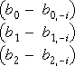

Influence on fitted values
As in simple linear regression, high-leverage points have the potential to strongly influence the conclusions from a data set.
Leverage is only a function of the explanatory variables, and we also need to take into account the response values for any high-leverage points to see whether they are actually influential.
One measure of influence relates to how deletion of each point affects that point's fitted value,
Observations are often classified as 'influential' if

It can be proved that DFITS is a simple function of the externally studentised residual and the leverage,

Influence on parameter estimates
An alternative is to look at how deletion of each point affects the regression coefficients,

Instead of separately examining the influence on each parameter estimate, they are usually combined into a single statistics, called Cook's D. Although it can be defined in terms of the above differences, it can also be expressed in terms of the standardised residuals and leverages,

Therefore the two influence measures are related,